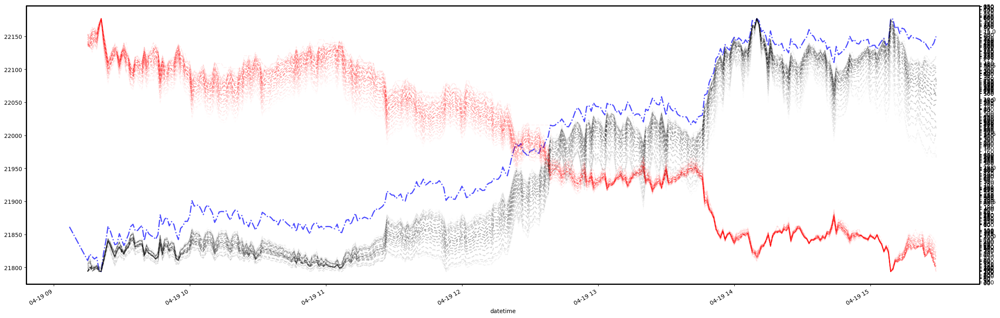

Reattempt for GA with Options Strategy#
import numpy as np
import pandas as pd
from scipy.stats import norm
from requests import get
from retry import retry
import scipy.stats as stats
import matplotlib.pyplot as plt
import scipy.stats as stats
import numpy as np
from datetime import datetime
BROKER_URL = 'http://localhost:4003/'
def black_scholes_greeks(S, K, T, r, sigma, option_type):
"""
Calculates option Greeks using the Black-Scholes model.
Args:
S: Current underlying asset price
K: Strike price
T: Time to expiration (in years)
r: Risk-free interest rate
sigma: Volatility of the underlying asset
option_type: 'Call' or 'Put'
Returns:
A dictionary containing the following Greeks:
delta: Change in option price w.r.t. underlying price
gamma: Change in delta w.r.t. underlying price
vega: Change in option price w.r.t. volatility
theta: Change in option price w.r.t. time
rho: Change in option price w.r.t. interest rate
"""
d1 = (np.log(S / K) + (r + 0.5 * sigma ** 2) * T) / (sigma * np.sqrt(T))
d2 = d1 - sigma * np.sqrt(T)
if option_type == 'Call':
N_d1 = stats.norm.cdf(d1)
N_d2 = stats.norm.cdf(d2)
delta = N_d1
gamma = stats.norm.pdf(d1) / (S * sigma * np.sqrt(T))
vega = S * stats.norm.pdf(d1) * np.sqrt(T)
theta = -(S * stats.norm.pdf(d1) * sigma) / \
(2 * np.sqrt(T)) - r * K * np.exp(-r * T) * N_d2
rho = K * T * np.exp(-r * T) * N_d2
elif option_type == 'Put':
N_d1 = stats.norm.cdf(-d1)
N_d2 = stats.norm.cdf(-d2)
delta = -N_d1
gamma = stats.norm.pdf(d1) / (S * sigma * np.sqrt(T))
vega = S * stats.norm.pdf(d1) * np.sqrt(T)
theta = -(S * stats.norm.pdf(d1) * sigma) / \
(2 * np.sqrt(T)) + r * K * np.exp(-r * T) * N_d2
rho = -K * T * np.exp(-r * T) * N_d2
else:
raise ValueError(
"Invalid option type. Please specify 'Call' or 'Put'.")
return {
'delta': delta,
'gamma': gamma,
'vega': vega,
'theta': theta,
'rho': rho
}
def black_scholes_price(S, K, T, r, sigma, option_type):
"""Calculates the Black-Scholes option price."""
d1 = (np.log(S / K) + (r + 0.5 * sigma ** 2) * T) / (sigma * np.sqrt(T))
d2 = d1 - sigma * np.sqrt(T)
if option_type == 'Call':
price = S * stats.norm.cdf(d1) - K * \
np.exp(-r * T) * stats.norm.cdf(d2)
elif option_type == 'Put':
price = K * np.exp(-r * T) * stats.norm.cdf(-d2) - \
S * stats.norm.cdf(-d1)
else:
raise ValueError(
"Invalid option type. Please specify 'Call' or 'Put'.")
return price
def implied_volatility(
S,
K,
T,
r,
market_price,
option_type,
tol=1e-6,
max_iter=100
):
"""Calculates implied volatility using the Newton-Raphson method."""
sigma = 0.2 # Initial guess for volatility
for i in range(max_iter):
price = black_scholes_price(S, K, T, r, sigma, option_type)
vega = black_scholes_greeks(S, K, T, r, sigma, option_type)['vega']
if vega == 0:
continue
sigma_new = sigma - (price - market_price) / vega
if np.abs(sigma_new - sigma) < tol:
break
sigma = sigma_new
else:
raise ValueError(
f"Failed to converge within tolerance., {np.abs(sigma_new - sigma)}, {tol}"
)
return sigma_new
def get_option_chain(symbol, right, wte):
sub_url = f"option_chain/{symbol}/{right}/{wte}"
resp = get(BROKER_URL + sub_url)
return resp.json()
@retry(tries=3, delay=1, backoff=2)
def get_option_history(symbol, right, wte, strike_price, hist_date):
options = {
'right': right,
'wte': wte,
'strike_price': strike_price,
'product_type': 'options',
'exchange_code': 'NFO',
}
options_str = '&'.join([f"{k}={v}" for k, v in options.items()])
sub_url = f"history/{symbol}/{hist_date}?{options_str}"
resp = get(BROKER_URL + sub_url)
return resp.json()
rcall = get_option_chain('NIFTY', 'Call', 1)
rput = get_option_chain('NIFTY', 'Put', 1)
oc_df = pd.concat(
[
pd.DataFrame(rcall['Success']),
pd.DataFrame(rput['Success'])
]
)
oc_df['strike_distance'] = ((oc_df['spot_price'].astype(
np.float64) - oc_df['strike_price'].astype(np.float64))//50).abs()
oc_df[oc_df['strike_distance'] <= 10].sort_values(
['right', 'strike_price']).reset_index(drop=True)
| exchange_code | product_type | stock_code | expiry_date | right | strike_price | ltp | ltt | best_bid_price | best_bid_quantity | ... | upper_circuit | lower_circuit | total_quantity_traded | spot_price | ltq | open_interest | chnge_oi | total_buy_qty | total_sell_qty | strike_distance | |
|---|---|---|---|---|---|---|---|---|---|---|---|---|---|---|---|---|---|---|---|---|---|
| 0 | NFO | Options | NIFTY | 02-May-2024 | Call | 21600.0 | 652.20 | 19-Apr-2024 15:29:30 | 652.80 | 400 | ... | 1088.40 | 222.30 | 51400 | 22147 | 200 | 13950.0 | 0.0 | 8650 | 4700 | 10.0 |
| 1 | NFO | Options | NIFTY | 02-May-2024 | Call | 21650.0 | 606.80 | 19-Apr-2024 15:27:18 | 609.55 | 400 | ... | 1034.70 | 189.90 | 44050 | 22147 | 100 | 7950.0 | 0.0 | 11400 | 5400 | 9.0 |
| 2 | NFO | Options | NIFTY | 02-May-2024 | Call | 21700.0 | 570.00 | 19-Apr-2024 15:29:30 | 567.70 | 400 | ... | 987.10 | 165.60 | 196850 | 22147 | 100 | 23000.0 | 0.0 | 15700 | 6500 | 8.0 |
| 3 | NFO | Options | NIFTY | 02-May-2024 | Call | 21750.0 | 527.70 | 19-Apr-2024 15:29:23 | 525.70 | 400 | ... | 928.75 | 132.55 | 82750 | 22147 | 50 | 14000.0 | 0.0 | 16500 | 8100 | 7.0 |
| 4 | NFO | Options | NIFTY | 02-May-2024 | Call | 21800.0 | 486.90 | 19-Apr-2024 15:29:53 | 484.30 | 50 | ... | 881.15 | 112.15 | 1150600 | 22147 | 100 | 165450.0 | 0.0 | 17400 | 11500 | 6.0 |
| 5 | NFO | Options | NIFTY | 02-May-2024 | Call | 21850.0 | 445.70 | 19-Apr-2024 15:29:45 | 445.85 | 950 | ... | 823.55 | 83.65 | 492750 | 22147 | 100 | 28350.0 | 0.0 | 11100 | 7750 | 5.0 |
| 6 | NFO | Options | NIFTY | 02-May-2024 | Call | 21900.0 | 410.00 | 19-Apr-2024 15:29:53 | 407.80 | 1000 | ... | 772.25 | 63.05 | 1783200 | 22147 | 50 | 176000.0 | 0.0 | 15050 | 10100 | 4.0 |
| 7 | NFO | Options | NIFTY | 02-May-2024 | Call | 21950.0 | 370.15 | 19-Apr-2024 15:29:50 | 370.30 | 800 | ... | 718.55 | 41.55 | 404800 | 22147 | 150 | 34400.0 | 0.0 | 11300 | 8750 | 3.0 |
| 8 | NFO | Options | NIFTY | 02-May-2024 | Call | 22000.0 | 330.30 | 19-Apr-2024 15:29:54 | 335.00 | 1050 | ... | 671.40 | 27.80 | 4019100 | 22147 | 50 | 519200.0 | 0.0 | 34450 | 15150 | 2.0 |
| 9 | NFO | Options | NIFTY | 02-May-2024 | Call | 22050.0 | 305.00 | 19-Apr-2024 15:29:59 | 300.00 | 50 | ... | 615.00 | 5.90 | 526800 | 22147 | 50 | 44350.0 | 0.0 | 14500 | 4800 | 1.0 |
| 10 | NFO | Options | NIFTY | 02-May-2024 | Call | 22100.0 | 271.90 | 19-Apr-2024 15:29:58 | 271.75 | 1250 | ... | 567.20 | 0.05 | 2869950 | 22147 | 50 | 310900.0 | 0.0 | 26650 | 11450 | 0.0 |
| 11 | NFO | Options | NIFTY | 02-May-2024 | Call | 22150.0 | 244.70 | 19-Apr-2024 15:29:59 | 240.20 | 50 | ... | 520.15 | 0.05 | 1058750 | 22147 | 50 | 73500.0 | 0.0 | 21900 | 5300 | 1.0 |
| 12 | NFO | Options | NIFTY | 02-May-2024 | Call | 22200.0 | 211.35 | 19-Apr-2024 15:29:59 | 211.35 | 550 | ... | 470.90 | 0.05 | 2989300 | 22147 | 50 | 465850.0 | 0.0 | 25150 | 22950 | 2.0 |
| 13 | NFO | Options | NIFTY | 02-May-2024 | Call | 22250.0 | 185.40 | 19-Apr-2024 15:29:59 | 182.00 | 50 | ... | 425.25 | 0.05 | 703300 | 22147 | 50 | 78250.0 | 0.0 | 21600 | 9200 | 3.0 |
| 14 | NFO | Options | NIFTY | 02-May-2024 | Call | 22300.0 | 159.90 | 19-Apr-2024 15:29:58 | 159.00 | 600 | ... | 382.70 | 0.05 | 2656550 | 22147 | 250 | 580550.0 | 0.0 | 29700 | 20850 | 4.0 |
| 15 | NFO | Options | NIFTY | 02-May-2024 | Call | 22350.0 | 137.00 | 19-Apr-2024 15:29:59 | 137.00 | 100 | ... | 339.75 | 0.05 | 650650 | 22147 | 50 | 91850.0 | 0.0 | 18150 | 9850 | 5.0 |
| 16 | NFO | Options | NIFTY | 02-May-2024 | Call | 22400.0 | 117.00 | 19-Apr-2024 15:29:59 | 116.20 | 200 | ... | 302.50 | 0.05 | 2622100 | 22147 | 50 | 481100.0 | 0.0 | 27600 | 13550 | 6.0 |
| 17 | NFO | Options | NIFTY | 02-May-2024 | Call | 22450.0 | 99.45 | 19-Apr-2024 15:29:59 | 96.35 | 50 | ... | 268.65 | 0.05 | 624450 | 22147 | 50 | 89950.0 | 0.0 | 23750 | 7600 | 7.0 |
| 18 | NFO | Options | NIFTY | 02-May-2024 | Call | 22500.0 | 84.35 | 19-Apr-2024 15:29:58 | 81.00 | 1550 | ... | 234.85 | 0.05 | 3556350 | 22147 | 100 | 543450.0 | 0.0 | 50250 | 27700 | 8.0 |
| 19 | NFO | Options | NIFTY | 02-May-2024 | Call | 22550.0 | 66.00 | 19-Apr-2024 15:29:46 | 65.20 | 50 | ... | 203.70 | 0.05 | 613350 | 22147 | 250 | 91850.0 | 0.0 | 45400 | 12500 | 9.0 |
| 20 | NFO | Options | NIFTY | 02-May-2024 | Call | 22600.0 | 54.00 | 19-Apr-2024 15:29:56 | 53.60 | 50 | ... | 177.45 | 0.05 | 2655100 | 22147 | 50 | 297250.0 | 0.0 | 38650 | 8850 | 10.0 |
| 21 | NFO | Options | NIFTY | 02-May-2024 | Put | 21600.0 | 61.60 | 19-Apr-2024 15:29:58 | 60.75 | 50 | ... | 137.65 | 0.75 | 2153600 | 22147 | 50 | 195450.0 | 0.0 | 16750 | 20250 | 10.0 |
| 22 | NFO | Options | NIFTY | 02-May-2024 | Put | 21650.0 | 71.55 | 19-Apr-2024 15:29:51 | 66.75 | 50 | ... | 154.45 | 0.05 | 497800 | 22147 | 50 | 85600.0 | 0.0 | 9850 | 7250 | 9.0 |
| 23 | NFO | Options | NIFTY | 02-May-2024 | Put | 21700.0 | 78.00 | 19-Apr-2024 15:29:59 | 75.65 | 50 | ... | 173.95 | 0.05 | 2714950 | 22147 | 100 | 211550.0 | 0.0 | 11600 | 25950 | 8.0 |
| 24 | NFO | Options | NIFTY | 02-May-2024 | Put | 21750.0 | 94.40 | 19-Apr-2024 15:29:58 | 86.00 | 50 | ... | 196.40 | 0.05 | 615900 | 22147 | 100 | 55850.0 | 0.0 | 8650 | 14300 | 7.0 |
| 25 | NFO | Options | NIFTY | 02-May-2024 | Put | 21800.0 | 90.00 | 19-Apr-2024 15:29:59 | 90.00 | 300 | ... | 218.65 | 0.05 | 4259200 | 22147 | 100 | 386100.0 | 0.0 | 11800 | 38800 | 6.0 |
| 26 | NFO | Options | NIFTY | 02-May-2024 | Put | 21850.0 | 104.80 | 19-Apr-2024 15:29:51 | 105.30 | 950 | ... | 245.80 | 0.05 | 990600 | 22147 | 50 | 94800.0 | 0.0 | 9700 | 26100 | 5.0 |
| 27 | NFO | Options | NIFTY | 02-May-2024 | Put | 21900.0 | 115.05 | 19-Apr-2024 15:29:57 | 117.95 | 50 | ... | 270.60 | 0.05 | 3226100 | 22147 | 300 | 450500.0 | 0.0 | 8750 | 34850 | 4.0 |
| 28 | NFO | Options | NIFTY | 02-May-2024 | Put | 21950.0 | 130.00 | 19-Apr-2024 15:29:59 | 120.00 | 100 | ... | 299.70 | 0.05 | 635600 | 22147 | 50 | 63000.0 | 0.0 | 3050 | 9800 | 3.0 |
| 29 | NFO | Options | NIFTY | 02-May-2024 | Put | 22000.0 | 145.00 | 19-Apr-2024 15:29:59 | 145.00 | 50 | ... | 331.35 | 0.05 | 4015850 | 22147 | 50 | 761000.0 | 0.0 | 8600 | 40800 | 2.0 |
| 30 | NFO | Options | NIFTY | 02-May-2024 | Put | 22050.0 | 161.00 | 19-Apr-2024 15:29:57 | 158.00 | 50 | ... | 364.85 | 0.05 | 459350 | 22147 | 50 | 72450.0 | 0.0 | 1400 | 8700 | 1.0 |
| 31 | NFO | Options | NIFTY | 02-May-2024 | Put | 22100.0 | 179.00 | 19-Apr-2024 15:29:58 | 179.00 | 200 | ... | 399.10 | 0.05 | 1521900 | 22147 | 50 | 334900.0 | 0.0 | 5650 | 15700 | 0.0 |
| 32 | NFO | Options | NIFTY | 02-May-2024 | Put | 22150.0 | 199.00 | 19-Apr-2024 15:29:59 | 196.90 | 250 | ... | 436.75 | 0.05 | 424500 | 22147 | 50 | 63150.0 | 0.0 | 4700 | 4800 | 1.0 |
| 33 | NFO | Options | NIFTY | 02-May-2024 | Put | 22200.0 | 216.40 | 19-Apr-2024 15:29:58 | 216.40 | 150 | ... | 474.15 | 0.05 | 1304100 | 22147 | 50 | 400200.0 | 0.0 | 7100 | 22800 | 2.0 |
| 34 | NFO | Options | NIFTY | 02-May-2024 | Put | 22250.0 | 240.50 | 19-Apr-2024 15:29:59 | 240.50 | 250 | ... | 515.00 | 0.05 | 125300 | 22147 | 50 | 30100.0 | 0.0 | 3400 | 5350 | 3.0 |
| 35 | NFO | Options | NIFTY | 02-May-2024 | Put | 22300.0 | 265.35 | 19-Apr-2024 15:29:53 | 265.35 | 600 | ... | 557.90 | 0.05 | 613900 | 22147 | 50 | 296550.0 | 0.0 | 7000 | 10500 | 4.0 |
| 36 | NFO | Options | NIFTY | 02-May-2024 | Put | 22350.0 | 297.55 | 19-Apr-2024 15:29:22 | 294.60 | 750 | ... | 597.45 | 0.05 | 64050 | 22147 | 50 | 25250.0 | 0.0 | 4850 | 14750 | 5.0 |
| 37 | NFO | Options | NIFTY | 02-May-2024 | Put | 22400.0 | 319.65 | 19-Apr-2024 15:29:40 | 321.70 | 50 | ... | 643.20 | 1.90 | 202650 | 22147 | 50 | 93450.0 | 0.0 | 4850 | 10600 | 6.0 |
| 38 | NFO | Options | NIFTY | 02-May-2024 | Put | 22450.0 | 356.45 | 19-Apr-2024 15:29:23 | 354.60 | 400 | ... | 690.35 | 16.25 | 19800 | 22147 | 50 | 9450.0 | 0.0 | 3150 | 8250 | 7.0 |
| 39 | NFO | Options | NIFTY | 02-May-2024 | Put | 22500.0 | 385.80 | 19-Apr-2024 15:29:48 | 386.50 | 50 | ... | 741.10 | 35.40 | 237300 | 22147 | 50 | 144100.0 | 0.0 | 4400 | 11750 | 8.0 |
| 40 | NFO | Options | NIFTY | 02-May-2024 | Put | 22550.0 | 435.15 | 19-Apr-2024 15:27:22 | 422.00 | 400 | ... | 792.35 | 56.65 | 17900 | 22147 | 200 | 6150.0 | 0.0 | 3350 | 8400 | 9.0 |
| 41 | NFO | Options | NIFTY | 02-May-2024 | Put | 22600.0 | 459.90 | 19-Apr-2024 15:29:30 | 459.05 | 400 | ... | 840.05 | 76.05 | 68350 | 22147 | 50 | 56450.0 | 0.0 | 2800 | 10400 | 10.0 |
42 rows × 27 columns
odf = oc_df[oc_df['strike_distance'] <= 10].sort_values(
'strike_price')[['stock_code', 'right', 'strike_price']].reset_index(drop=True)
WTE = 0
hist_dfs = []
for record in odf.to_dict('records'):
resp = get_option_history(
'NIFTY',
record['right'],
WTE,
int(record['strike_price']),
'20240419'
)
if resp['Error']:
continue
hist_df = pd.DataFrame(resp['Success'])
hist_df['stock_code'] = record['stock_code']
hist_dfs.append(hist_df)
hist_df = pd.concat(hist_dfs)
ndf = pd.read_csv('/workspace/nifty/NIFTY/20240419.csv',
parse_dates=['datetime']).set_index('datetime')
len(hist_dfs)
42
fig, ax = plt.subplots(1, 1, figsize=(30, 10))
spot = oc_df.spot_price.astype(np.float64).unique()[0]
for hist_df in hist_dfs:
strike = hist_df['strike_price'].astype(np.float64).unique()[0]
right = hist_df['right'].unique()[0]
dist = np.abs((spot - strike)//50)/30
hist_df['datetime'] = pd.to_datetime(hist_df['datetime'])
hist_df.set_index('datetime')['close'].plot(
ax=ax.twinx(), c='k' if right == 'Call' else 'r', alpha=.35-dist, ls='--')
ndf['close'].plot(ax=ax, c='b', alpha=.7, ls='-.', lw=2)
plt.show()

time_offset = 150
curr_date = ndf.index[time_offset]
hist_df = pd.concat(hist_dfs)
hist_df.expiry_date = pd.to_datetime(hist_df.expiry_date)
expiry_date = hist_df.expiry_date.unique()[0]
days_to_expiry = (expiry_date - curr_date).days + \
(expiry_date - curr_date).seconds / (3600*24)
T = days_to_expiry / 365
r = 0.06
S = 22147
K = 21600
sigma = 0.2
option_type = 'Call'
def black_scholes_greeks(S, K, T, r, sigma, option_type):
"""
Calculates option Greeks using the Black-Scholes model.
Args:
S: Current underlying asset price
K: Strike price
T: Time to expiration (in years)
r: Risk-free interest rate
sigma: Volatility of the underlying asset
option_type: 'Call' or 'Put'
Returns:
A dictionary containing the following Greeks:
delta: Change in option price w.r.t. underlying price
gamma: Change in delta w.r.t. underlying price
vega: Change in option price w.r.t. volatility
theta: Change in option price w.r.t. time
rho: Change in option price w.r.t. interest rate
"""
d1 = (np.log(S / K) + (r + 0.5 * sigma ** 2) * T) / (sigma * np.sqrt(T))
d2 = d1 - sigma * np.sqrt(T)
if option_type == 'Call':
N_d1 = stats.norm.cdf(d1)
N_d2 = stats.norm.cdf(d2)
delta = N_d1
gamma = stats.norm.pdf(d1) / (S * sigma * np.sqrt(T))
vega = S * stats.norm.pdf(d1) * np.sqrt(T)
theta = -(S * stats.norm.pdf(d1) * sigma) / \
(2 * np.sqrt(T)) - r * K * np.exp(-r * T) * N_d2
rho = K * T * np.exp(-r * T) * N_d2
elif option_type == 'Put':
N_d1 = stats.norm.cdf(-d1)
N_d2 = stats.norm.cdf(-d2)
delta = -N_d1
gamma = stats.norm.pdf(d1) / (S * sigma * np.sqrt(T))
vega = S * stats.norm.pdf(d1) * np.sqrt(T)
theta = -(S * stats.norm.pdf(d1) * sigma) / \
(2 * np.sqrt(T)) + r * K * np.exp(-r * T) * N_d2
rho = -K * T * np.exp(-r * T) * N_d2
else:
raise ValueError(
"Invalid option type. Please specify 'Call' or 'Put'.")
return {
'delta': delta,
'gamma': gamma,
'vega': vega,
'theta': theta,
'rho': rho
}
def black_scholes_price(S, K, T, r, sigma, option_type):
"""Calculates the Black-Scholes option price."""
d1 = (np.log(S / K) + (r + 0.5 * sigma ** 2) * T) / (sigma * np.sqrt(T))
d2 = d1 - sigma * np.sqrt(T)
if option_type == 'Call':
price = S * stats.norm.cdf(d1) - K * \
np.exp(-r * T) * stats.norm.cdf(d2)
elif option_type == 'Put':
price = K * np.exp(-r * T) * stats.norm.cdf(-d2) - \
S * stats.norm.cdf(-d1)
else:
raise ValueError(
"Invalid option type. Please specify 'Call' or 'Put'.")
return price
def implied_volatility(
S,
K,
T,
r,
market_price,
option_type,
tol=1e-6,
max_iter=100
):
"""Calculates implied volatility using the Newton-Raphson method."""
sigma = .5 # Initial guess for volatility
for i in range(max_iter):
price = black_scholes_price(S, K, T, r, sigma, option_type)
vega = black_scholes_greeks(S, K, T, r, sigma, option_type)['vega']
if vega == 0:
continue
sigma_new = sigma - (price - market_price) / vega
print(price, vega, sigma, market_price, np.abs(sigma_new - sigma))
if np.abs(sigma_new - sigma) < tol:
break
sigma = sigma_new
else:
raise ValueError(
f"Failed to converge within tolerance., {np.abs(sigma_new - sigma)}, {tol}"
)
return sigma_new
# black_scholes_greeks(S, K, T, r, sigma, option_type)
implied_volatility(S, K, T, r, sigma, option_type)
866.0383746846674 980.0152344418309 0.5 0.2 0.8834948113615875
-188.31766020166015 921.0395102439235 -0.3834948113615875 0.2 0.2046792326549966
-28.10587036382458 534.5493553504499 -0.17881557870659087 0.2 0.05295277242504068
-6.560107825975933 263.25355614418845 -0.1258628062815502 0.2 0.02567907505216495
-1.7163488407288696 116.88934368997442 -0.10018373122938524 0.2 0.016394555570536873
-0.42788913615160595 45.11966234312244 -0.08378917565884837 0.2 0.013916086768927569
-0.06723055147885049 11.26742573689863 -0.0698730888899208 0.2 0.023717090107256922
-6.119675360648918e-05 0.03136685125657432 -0.04615599878266388 0.2 6.378109014422504
6905.8912960598445 993.0389111253335 6.33195301563984 0.2 6.954099400026696
-421.2830315311121 1011.1161577134548 -0.6221463843868555 0.2 0.4168492693107158
-43.60815267466296 632.2356913252609 -0.20529711507613974 0.2 0.06929085667851889
-9.530149124374248 322.04916722227046 -0.13600625839762084 0.2 0.03021324106594797
-2.4553553428324335 146.9306058208885 -0.10579301733167287 0.2 0.01807217310510084
-0.6330018458995141 59.55524655089667 -0.08772084422657203 0.2 0.013987043865020699
-0.12294373708132156 17.929276650467035 -0.07373380036155133 0.2 0.018012089577127993
-0.002717559292325422 0.8306600301028182 -0.05572171078442334 0.2 0.24404395534384057
599.9296102112421 572.4154906677081 0.18832224455941723 0.2 1.0477172962452024
-664.9347695504166 1038.4564319266076 -0.8593950516857851 0.2 0.6405032980694415
-52.490942370181074 673.6817136995338 -0.2188917536163436 0.2 0.07821340745739991
-11.096484708797561 348.3585795181909 -0.1406783461589437 0.2 0.032427749373710124
-2.833236121236496 160.6384864769214 -0.10825059678523358 0.2 0.018882374876410923
-0.736528338002131 66.18612349761123 -0.08936822190882265 0.2 0.014149919779422218
-0.15182834694068248 21.037419363229727 -0.07521830212940044 0.2 0.016723930861768432
-0.006011072765293779 1.6118554364804827 -0.058494371267632 0.2 0.12780989417706276
566.6205309495745 10.46818212796558 0.06931552290943076 0.2 54.10877686550668
-21560.76992667383 4.329188386005077 -54.03946134259725 0.2 4980.372301739919
---------------------------------------------------------------------------
ValueError Traceback (most recent call last)
Cell In[60], line 108
104 return sigma_new
107 # black_scholes_greeks(S, K, T, r, sigma, option_type)
--> 108 implied_volatility(S, K, T, r, sigma, option_type)
Cell In[60], line 101, in implied_volatility(S, K, T, r, market_price, option_type, tol, max_iter)
99 sigma = sigma_new
100 else:
--> 101 raise ValueError(
102 f"Failed to converge within tolerance., {np.abs(sigma_new - sigma)}, {tol}"
103 )
104 return sigma_new
ValueError: Failed to converge within tolerance., 0.0, 1e-06
hist_df[
(hist_df['datetime'] == ndf.index[time_offset])
& (hist_df['strike_price'] == 22100.0)
]
| close | datetime | exchange_code | expiry_date | high | low | open | open_interest | product_type | right | stock_code | strike_price | volume | |
|---|---|---|---|---|---|---|---|---|---|---|---|---|---|
| 261 | 260.55 | 2024-04-19 11:44:00 | NFO | 2024-04-25 | 261.80 | 255.0 | 256.25 | 1929250 | Options | Put | NIFTY | 22100.0 | 29000 |
| 273 | 87.65 | 2024-04-19 11:44:00 | NFO | 2024-04-25 | 90.90 | 87.2 | 90.75 | 3698600 | Options | Call | NIFTY | 22100.0 | 254550 |
| 274 | 88.10 | 2024-04-19 11:44:00 | NFO | 2024-04-25 | 90.35 | 87.2 | 90.25 | 3698600 | Options | Call | NIFTY | 22100.0 | 252100 |
# hdf = hist_dfs[10].set_index('datetime').copy()
# hdf.expiry_date = pd.to_datetime(hdf.expiry_date)
# nifty_close_price = ndf[ndf.index[100]:ndf.index[100]].close.values[0]
# option_close_price = hdf[ndf.index[100]:ndf.index[100]].head(1).close.values[0]
# option_strike_price = hdf[ndf.index[100] :ndf.index[100]].head(1).strike_price.values[0]
records = []
tdf = hist_df[
hist_df['datetime'] == ndf.index[time_offset]
][['datetime', 'strike_price', 'right', 'close']].drop_duplicates().merge(
oc_df[['spot_price', 'strike_price', 'right']],
on=['strike_price', 'right'],
how='left'
).sort_values(
['right', 'strike_price',]
)
for record in tdf.to_dict('records'):
try:
S = np.float64(record['spot_price'])
K = np.float64(record['strike_price'])
sigma = implied_volatility(
S,
K,
T,
r,
np.float64(record['close']),
record['right']
)
option_type = record['right']
record.update(
black_scholes_greeks(S, K, T, r, sigma, option_type)
)
except Exception as e:
pass
records.append(record)
greeks_df = pd.DataFrame(records)
greeks_df['strike_distance'] = ((greeks_df['spot_price'].astype(
np.float64) - greeks_df['strike_price'].astype(np.float64))//50).abs()
greeks_df.sort_values(['right', 'strike_distance']
).dropna().reset_index(drop=True).groupby(['right', 'strike_price']).first()
/tmp/ipykernel_1403175/3734915972.py:58: RuntimeWarning: overflow encountered in scalar power
d1 = (np.log(S / K) + (r + 0.5 * sigma ** 2) * T) / (sigma * np.sqrt(T))
/tmp/ipykernel_1403175/3734915972.py:22: RuntimeWarning: overflow encountered in scalar power
d1 = (np.log(S / K) + (r + 0.5 * sigma ** 2) * T) / (sigma * np.sqrt(T))
| datetime | close | spot_price | delta | gamma | vega | theta | rho | strike_distance | ||
|---|---|---|---|---|---|---|---|---|---|---|
| right | strike_price | |||||||||
| Call | 22100.0 | 2024-04-19 11:44:00 | 87.65 | 22147 | 0.717419 | 0.002884 | 920.144259 | -2260.542604 | 238.578761 | 0.0 |
| 22150.0 | 2024-04-19 11:44:00 | 71.00 | 22147 | 0.545023 | 0.002546 | 1078.749450 | -2764.057236 | 181.181655 | 1.0 | |
| 22200.0 | 2024-04-19 11:44:00 | 55.75 | 22147 | 0.428238 | 0.002207 | 1068.058622 | -2876.654706 | 142.359477 | 2.0 | |
| 22250.0 | 2024-04-19 11:44:00 | 43.75 | 22147 | 0.338082 | 0.001866 | 994.972756 | -2818.529006 | 112.392774 | 3.0 | |
| 22300.0 | 2024-04-19 11:44:00 | 33.75 | 22147 | 0.265588 | 0.001563 | 892.371908 | -2629.706082 | 88.302069 | 4.0 | |
| 22350.0 | 2024-04-19 11:44:00 | 25.80 | 22147 | 0.207316 | 0.001290 | 778.379249 | -2374.335606 | 68.936173 | 5.0 | |
| 22400.0 | 2024-04-19 11:44:00 | 19.60 | 22147 | 0.160838 | 0.001051 | 664.405179 | -2091.206817 | 53.487568 | 6.0 | |
| 22450.0 | 2024-04-19 11:44:00 | 14.90 | 22147 | 0.124473 | 0.000846 | 558.551119 | -1812.548992 | 41.398155 | 7.0 | |
| 22500.0 | 2024-04-19 11:44:00 | 11.50 | 22147 | 0.097019 | 0.000678 | 467.130521 | -1566.911527 | 32.269137 | 8.0 | |
| 22550.0 | 2024-04-19 11:44:00 | 8.60 | 22147 | 0.074036 | 0.000537 | 381.438944 | -1310.165880 | 24.627439 | 9.0 | |
| 22600.0 | 2024-04-19 11:44:00 | 6.45 | 22147 | 0.056470 | 0.000422 | 309.096463 | -1087.210647 | 18.785873 | 10.0 | |
| Put | 21600.0 | 2024-04-19 11:44:00 | 71.20 | 22147 | -0.190834 | 0.000408 | 740.475580 | -5757.093806 | -64.889255 | 10.0 |
| 21650.0 | 2024-04-19 11:44:00 | 81.25 | 22147 | -0.211888 | 0.000435 | 788.429830 | -6103.329608 | -72.081328 | 9.0 | |
| 21700.0 | 2024-04-19 11:44:00 | 93.20 | 22147 | -0.235143 | 0.000461 | 836.563240 | -6473.236977 | -80.038242 | 8.0 | |
| 21750.0 | 2024-04-19 11:44:00 | 106.00 | 22147 | -0.259244 | 0.000486 | 881.392337 | -6803.575775 | -88.290598 | 7.0 | |
| 21800.0 | 2024-04-19 11:44:00 | 121.65 | 22147 | -0.285787 | 0.000506 | 925.122282 | -7174.344657 | -97.402980 | 6.0 | |
| 21850.0 | 2024-04-19 11:44:00 | 138.90 | 22147 | -0.313216 | 0.000524 | 964.382221 | -7517.179973 | -106.835368 | 5.0 | |
| 21900.0 | 2024-04-19 11:44:00 | 158.25 | 22147 | -0.341569 | 0.000537 | 998.891295 | -7844.685905 | -116.608789 | 4.0 | |
| 21950.0 | 2024-04-19 11:44:00 | 179.45 | 22147 | -0.370341 | 0.000546 | 1027.813958 | -8141.015100 | -126.550195 | 3.0 | |
| 22000.0 | 2024-04-19 11:44:00 | 204.20 | 22147 | -0.399784 | 0.000549 | 1051.233316 | -8461.642302 | -136.769559 | 2.0 | |
| 22050.0 | 2024-04-19 11:44:00 | 231.25 | 22147 | -0.428807 | 0.000546 | 1068.337316 | -8758.936140 | -146.882979 | 1.0 | |
| 22100.0 | 2024-04-19 11:44:00 | 260.55 | 22147 | -0.457043 | 0.000539 | 1079.370716 | -9033.086306 | -156.767361 | 0.0 | |
| 22150.0 | 2024-04-19 11:44:00 | 293.75 | 22147 | -0.484196 | 0.000526 | 1084.818681 | -9342.850811 | -166.348461 | 1.0 | |
| 22200.0 | 2024-04-19 11:44:00 | 328.90 | 22147 | -0.509727 | 0.000510 | 1085.347985 | -9630.392489 | -175.416799 | 2.0 | |
| 22250.0 | 2024-04-19 11:44:00 | 366.30 | 22147 | -0.533476 | 0.000492 | 1081.846184 | -9914.372137 | -183.923135 | 3.0 | |
| 22300.0 | 2024-04-19 11:44:00 | 406.05 | 22147 | -0.555273 | 0.000471 | 1075.233800 | -10207.891570 | -191.812065 | 4.0 | |
| 22350.0 | 2024-04-19 11:44:00 | 444.45 | 22147 | -0.575976 | 0.000454 | 1065.922648 | -10392.502167 | -199.314906 | 5.0 | |
| 22400.0 | 2024-04-19 11:44:00 | 492.65 | 22147 | -0.592563 | 0.000427 | 1056.315277 | -10867.652271 | -205.589140 | 6.0 | |
| 22450.0 | 2024-04-19 11:44:00 | 536.05 | 22147 | -0.609124 | 0.000408 | 1044.797679 | -11129.839170 | -211.782507 | 7.0 | |
| 22500.0 | 2024-04-19 11:44:00 | 586.05 | 22147 | -0.622176 | 0.000384 | 1034.352150 | -11596.477297 | -216.901845 | 8.0 | |
| 22550.0 | 2024-04-19 11:44:00 | 635.35 | 22147 | -0.634255 | 0.000363 | 1023.597768 | -12009.785447 | -221.685640 | 9.0 | |
| 22600.0 | 2024-04-19 11:44:00 | 674.15 | 22147 | -0.649512 | 0.000353 | 1008.504824 | -11989.753985 | -227.373176 | 10.0 |
greeks_df.sort_values(['right', 'strike_price']
).dropna().reset_index(drop=True)
# .groupby(['right', 'strike_price']).first()
| datetime | strike_price | right | close | spot_price | delta | gamma | vega | theta | rho | strike_distance | |
|---|---|---|---|---|---|---|---|---|---|---|---|
| 0 | 2024-04-19 11:44:00 | 22100.0 | Call | 87.65 | 22147 | 0.717419 | 0.002884 | 920.144259 | -2260.542604 | 238.578761 | 0.0 |
| 1 | 2024-04-19 11:44:00 | 22100.0 | Call | 88.10 | 22147 | 0.715256 | 0.002863 | 923.511473 | -2277.372890 | 237.848614 | 0.0 |
| 2 | 2024-04-19 11:44:00 | 22150.0 | Call | 71.00 | 22147 | 0.545023 | 0.002546 | 1078.749450 | -2764.057236 | 181.181655 | 1.0 |
| 3 | 2024-04-19 11:44:00 | 22200.0 | Call | 55.75 | 22147 | 0.428238 | 0.002207 | 1068.058622 | -2876.654706 | 142.359477 | 2.0 |
| 4 | 2024-04-19 11:44:00 | 22250.0 | Call | 43.75 | 22147 | 0.338082 | 0.001866 | 994.972756 | -2818.529006 | 112.392774 | 3.0 |
| 5 | 2024-04-19 11:44:00 | 22300.0 | Call | 33.75 | 22147 | 0.265588 | 0.001563 | 892.371908 | -2629.706082 | 88.302069 | 4.0 |
| 6 | 2024-04-19 11:44:00 | 22350.0 | Call | 25.80 | 22147 | 0.207316 | 0.001290 | 778.379249 | -2374.335606 | 68.936173 | 5.0 |
| 7 | 2024-04-19 11:44:00 | 22400.0 | Call | 19.60 | 22147 | 0.160838 | 0.001051 | 664.405179 | -2091.206817 | 53.487568 | 6.0 |
| 8 | 2024-04-19 11:44:00 | 22450.0 | Call | 14.90 | 22147 | 0.124473 | 0.000846 | 558.551119 | -1812.548992 | 41.398155 | 7.0 |
| 9 | 2024-04-19 11:44:00 | 22500.0 | Call | 11.50 | 22147 | 0.097019 | 0.000678 | 467.130521 | -1566.911527 | 32.269137 | 8.0 |
| 10 | 2024-04-19 11:44:00 | 22500.0 | Call | 11.60 | 22147 | 0.097535 | 0.000679 | 468.953752 | -1576.524988 | 32.440331 | 8.0 |
| 11 | 2024-04-19 11:44:00 | 22550.0 | Call | 8.60 | 22147 | 0.074036 | 0.000537 | 381.438944 | -1310.165880 | 24.627439 | 9.0 |
| 12 | 2024-04-19 11:44:00 | 22600.0 | Call | 6.45 | 22147 | 0.056470 | 0.000422 | 309.096463 | -1087.210647 | 18.785873 | 10.0 |
| 13 | 2024-04-19 11:44:00 | 21600.0 | Put | 71.20 | 22147 | -0.190834 | 0.000408 | 740.475580 | -5757.093806 | -64.889255 | 10.0 |
| 14 | 2024-04-19 11:44:00 | 21650.0 | Put | 81.25 | 22147 | -0.211888 | 0.000435 | 788.429830 | -6103.329608 | -72.081328 | 9.0 |
| 15 | 2024-04-19 11:44:00 | 21700.0 | Put | 93.20 | 22147 | -0.235143 | 0.000461 | 836.563240 | -6473.236977 | -80.038242 | 8.0 |
| 16 | 2024-04-19 11:44:00 | 21750.0 | Put | 106.00 | 22147 | -0.259244 | 0.000486 | 881.392337 | -6803.575775 | -88.290598 | 7.0 |
| 17 | 2024-04-19 11:44:00 | 21800.0 | Put | 121.65 | 22147 | -0.285787 | 0.000506 | 925.122282 | -7174.344657 | -97.402980 | 6.0 |
| 18 | 2024-04-19 11:44:00 | 21850.0 | Put | 138.90 | 22147 | -0.313216 | 0.000524 | 964.382221 | -7517.179973 | -106.835368 | 5.0 |
| 19 | 2024-04-19 11:44:00 | 21900.0 | Put | 158.25 | 22147 | -0.341569 | 0.000537 | 998.891295 | -7844.685905 | -116.608789 | 4.0 |
| 20 | 2024-04-19 11:44:00 | 21950.0 | Put | 179.45 | 22147 | -0.370341 | 0.000546 | 1027.813958 | -8141.015100 | -126.550195 | 3.0 |
| 21 | 2024-04-19 11:44:00 | 22000.0 | Put | 204.20 | 22147 | -0.399784 | 0.000549 | 1051.233316 | -8461.642302 | -136.769559 | 2.0 |
| 22 | 2024-04-19 11:44:00 | 22050.0 | Put | 231.25 | 22147 | -0.428807 | 0.000546 | 1068.337316 | -8758.936140 | -146.882979 | 1.0 |
| 23 | 2024-04-19 11:44:00 | 22100.0 | Put | 260.55 | 22147 | -0.457043 | 0.000539 | 1079.370716 | -9033.086306 | -156.767361 | 0.0 |
| 24 | 2024-04-19 11:44:00 | 22150.0 | Put | 293.75 | 22147 | -0.484196 | 0.000526 | 1084.818681 | -9342.850811 | -166.348461 | 1.0 |
| 25 | 2024-04-19 11:44:00 | 22200.0 | Put | 328.90 | 22147 | -0.509727 | 0.000510 | 1085.347985 | -9630.392489 | -175.416799 | 2.0 |
| 26 | 2024-04-19 11:44:00 | 22250.0 | Put | 366.30 | 22147 | -0.533476 | 0.000492 | 1081.846184 | -9914.372137 | -183.923135 | 3.0 |
| 27 | 2024-04-19 11:44:00 | 22300.0 | Put | 406.05 | 22147 | -0.555273 | 0.000471 | 1075.233800 | -10207.891570 | -191.812065 | 4.0 |
| 28 | 2024-04-19 11:44:00 | 22350.0 | Put | 444.45 | 22147 | -0.575976 | 0.000454 | 1065.922648 | -10392.502167 | -199.314906 | 5.0 |
| 29 | 2024-04-19 11:44:00 | 22400.0 | Put | 492.65 | 22147 | -0.592563 | 0.000427 | 1056.315277 | -10867.652271 | -205.589140 | 6.0 |
| 30 | 2024-04-19 11:44:00 | 22450.0 | Put | 536.05 | 22147 | -0.609124 | 0.000408 | 1044.797679 | -11129.839170 | -211.782507 | 7.0 |
| 31 | 2024-04-19 11:44:00 | 22500.0 | Put | 586.05 | 22147 | -0.622176 | 0.000384 | 1034.352150 | -11596.477297 | -216.901845 | 8.0 |
| 32 | 2024-04-19 11:44:00 | 22550.0 | Put | 635.35 | 22147 | -0.634255 | 0.000363 | 1023.597768 | -12009.785447 | -221.685640 | 9.0 |
| 33 | 2024-04-19 11:44:00 | 22600.0 | Put | 674.15 | 22147 | -0.649512 | 0.000353 | 1008.504824 | -11989.753985 | -227.373176 | 10.0 |
# record = {'strike_price': 21600.0, 'close': 454.95, 'datetime': Timestamp('2024-04-19 10:54:00'), 'exchange_code': 'NFO', 'expiry_date': '02-MAY-2024', 'high': 456.5,
# 'low': 450.15, 'open': 456.5, 'open_interest': 16350, 'product_type': 'Options', 'right': 'Call', 'stock_code': 'NIFTY', 'volume': 250, 'spot_price': '22147'}
record = tdf[tdf['strike_price'] == 21600.0].to_dict('records')[0]
try:
S = np.float64(record['spot_price'])
K = np.float64(record['strike_price'])
sigma = implied_volatility(
S,
K,
T,
r,
np.float64(record['close']),
record['right']
)
option_type = record['right']
record.update(
black_scholes_greeks(S, K, T, r, sigma, option_type)
)
except Exception as e:
print(S, K, T, r, record['close'], record['right'])
print(e, print(record))
raise e